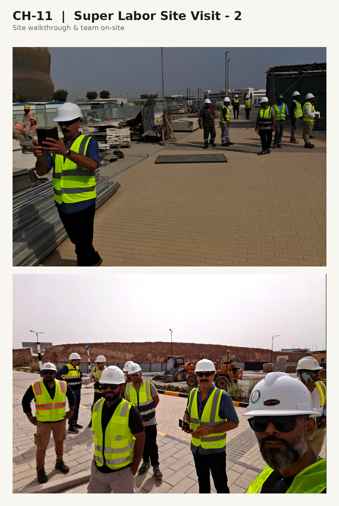

Chapter Eleven
Super-Labor — Dignity at the Root
Shams for Services
"Sustainable change begins where trust is weakest. Solve at the foundation, and every tier above gains strength."

The labor contracting industry in the Gulf operates on a model that few people outside the region fully understand, and even fewer discuss candidly. Subcontractor relationships are layered, often opaque, and frequently characterized by a trust deficit that begins at the foundation level — the workers themselves — and propagates upward through every tier of the value chain.
When I took on the role of General Manager at Shams for Services, I walked into an industry where the standard operating model was adversarial. Companies penalized subcontractors. Subcontractors cut corners. Workers bore the consequences. The system was stable in the sense that it perpetuated itself, but it was fundamentally broken in the sense that it destroyed value at every level.
The Dignity-First Approach
The Super-Labor Framework is built on a premise that most business frameworks ignore: sustainable change begins where trust is weakest. In the labor contracting chain, trust was weakest at the bottom — between workers and their immediate employers. Fix that relationship, and every tier above it strengthens. Ignore it, and no amount of executive strategy will produce lasting results.
We restructured the subcontractor relationship model to prioritize transparency, fair compensation, and clear performance expectations. We replaced punitive penalty structures with collaborative improvement protocols. We invested in worker conditions not as a corporate social responsibility initiative, but as a direct productivity strategy.

Measurable Results from Modest Corrections
What surprised even the skeptics was the speed of the impact. Subcontractor penalties dropped sharply. Productivity improved markedly. Employee satisfaction scores rose. And the margin improvement was real — not from squeezing the bottom of the chain harder, but from removing the friction and waste that an adversarial model generates.
The Super-Labor model demonstrates a principle that applies far beyond labor contracting: the strongest organizations are built from the foundation up.
"Silos are built by fear. They are broken by shared purpose."
— Zeeshan Sabri